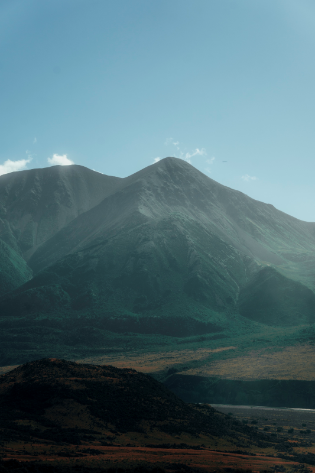
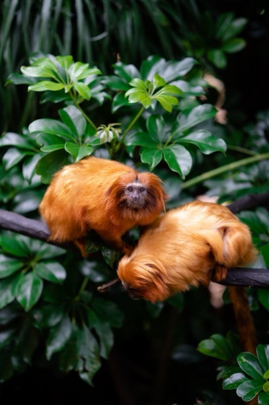
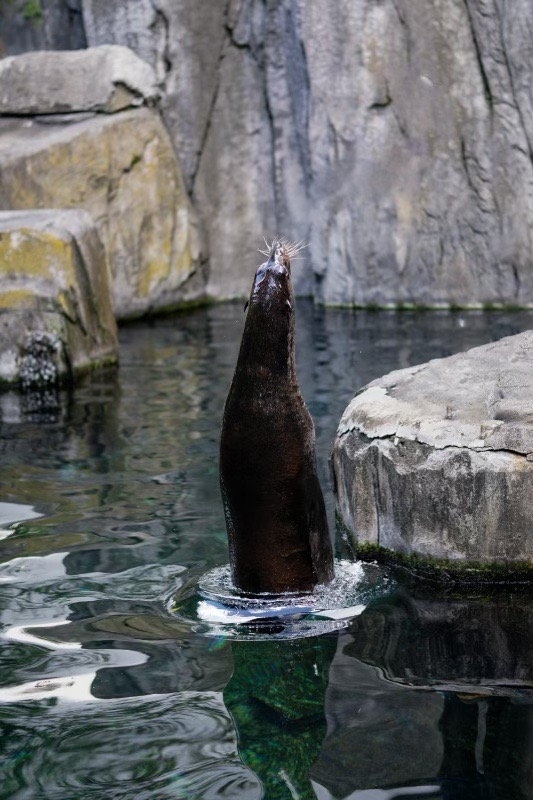
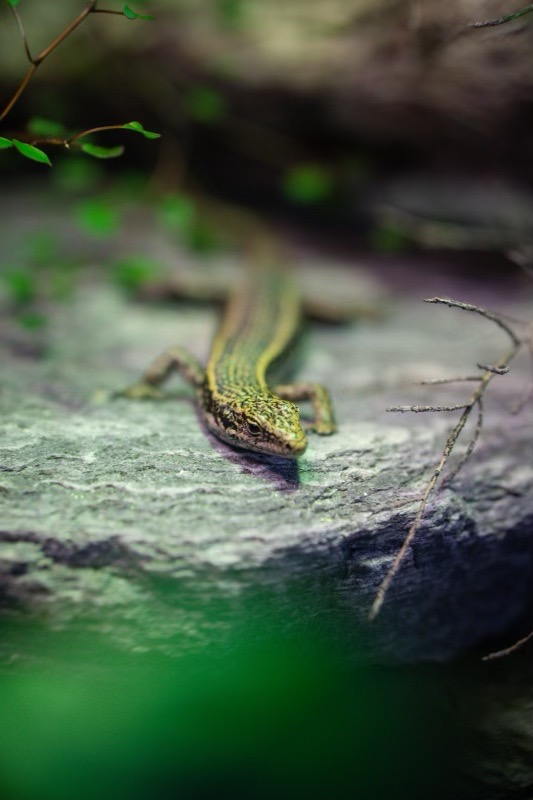

|  |  |
| Arthur's Pass | Golden Lion Tamarin |
| Arthur's Pass seen in a clear day | A couple of golden lions Tamarins seen in the auckland zoo |
| gap | |
|  |  |
| New Zealand Fur Seal/Kekeno | Eastern Grand Skink |
| A Kekeno jumping out of the water | A green eastern grand skink resting |